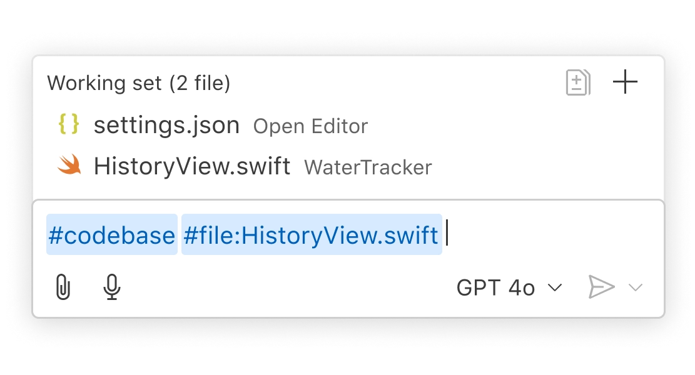
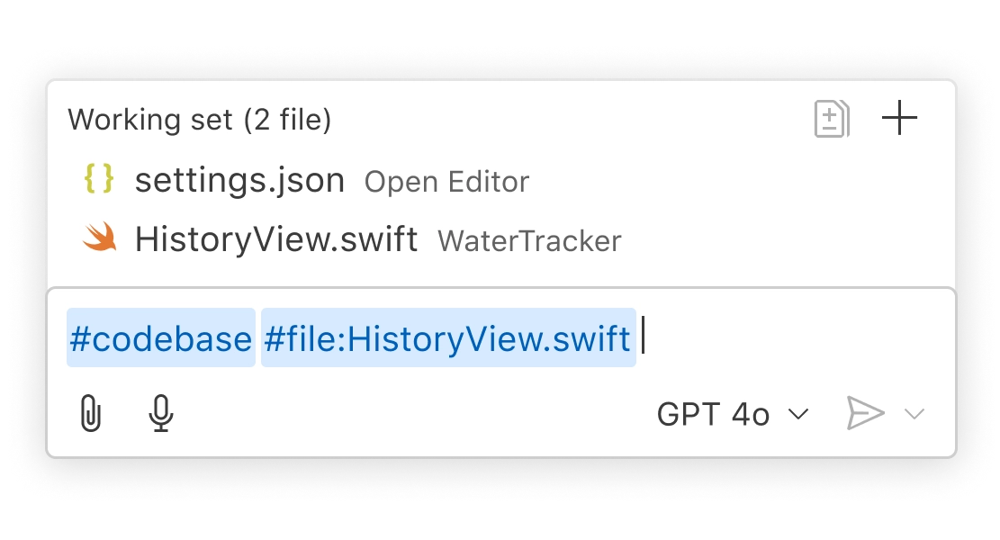
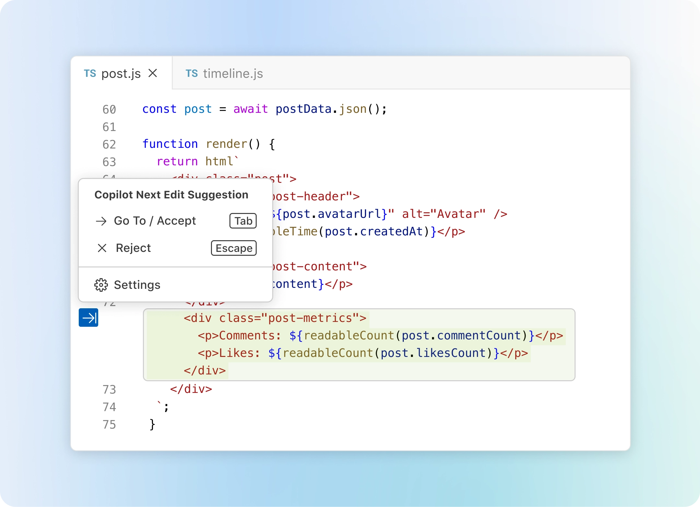
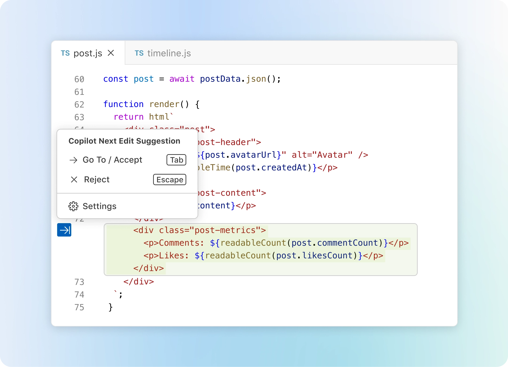

Your code editor. Redefined with AI.
Web, Insiders edition, or other platforms
By using VS Code, you agree to its license and privacy statement.

Choose the model that works for you
Pick the model that works best for your project and team, including GPT 4o and Claude Sonnet.

An expert on your codebase
Copilot locally indexes your codebase to understand what’s relevant and supplements that context to interactions with Copilot.
 

Personalized to your needs
Copilot works the way you do. Customize Copilot's prompts with details about your team's workflows, tools, and projects.


Multi-file edits
Describe what you want to build in natural language, and Copilot Edits takes care of the rest. Copilot Edits makes changes across files in your codebase with a UI designed for rapid iteration. It's the fastest way to add new functionality to your apps.
Build with Copilot Edits![VS Code window showing a code editor with projects.tsx open, alongside a Copilot Edits panel. The chat discusses modifications to make each project a link and add dynamic pages. Two files, projects.tsx and [slug].tsx, are in the working set, with GitHub Copilot suggesting edits.](images/swimlane-chat-dark.webp)
![VS Code window showing a code editor with projects.tsx open, alongside a Copilot Edits panel. The chat discusses modifications to make each project a link and add dynamic pages. Two files, projects.tsx and [slug].tsx, are in the working set, with GitHub Copilot suggesting edits.](images/swimlane-chat-light.webp)
Code suggestions
Copilot predicts your next thought with Next Edit Suggestions. Use the Tab key to accept AI-powered suggestions right in your editor. Next Edit Suggestions will intelligently suggest where and what to change across your file based on the edits you're making.
Pair program with Copilot 

Code with extensions
Extensions let you customize VS Code and Copilot with AI-powered features grounded securely in your team's data and workflows. Grab one from the gallery and add it to chat like @azure, or build your own Copilot extension to power your team's unique scenarios.

Python
Adds rich language support for Python

Stripe
Build, test, and use Stripe inside your editor

C/C++
Adds rich language support for C/C++


View 60k+ extensions in the Extension Marketplace
Code in any language
VS Code supports almost every major programming language. Several ship in the box, like JavaScript, TypeScript, CSS, and HTML, but extensions for others can be found in the VS Code Marketplace.

JavaScriptTypeScript
Python
C#
C++
HTML
Java
JSON
PHP
Markdown
Powershell
YAMLFully customizable
Customize your VS Code UI and layout so that it fits your coding style.
Color themes let you modify the colors in VS Code's user interface to suit your preferences and work environment.
Settings Sync enables you to share your user settings across your VS Code instances with the Settings Sync feature.
Profiles let you create sets of customizations and quickly switch between them or share them with others.


Code anywhere
Code wherever you're most productive, whether you're connected to the cloud, a remote repository, or in the browser with VS Code for the Web (vscode.dev).
Built-in Source Control empowers you with Git support out-of-the-box. Many other source control providers are available through extensions.
GitHub Codespaces provides cloud-powered development environments for any activity - whether it's a long-term project, or a short-term task like reviewing a pull request.


Code with rich features
There's a lot more to an editor. Whether it's using built-in features or rich extensions, there's something for everyone.

Integrated terminal
Use your favorite shell whether it's zsh, pwsh, or git bash, all inside the editor.

Run code
Run and debug your code without leaving your editor.

Version control
Built-in support for git and many other source control providers.

Build tasks
Run tools and analyze their results from within VS Code.

Local history
Never lose your changes with automatically tracked local history.

Themes
Your theme is an extension of your personality. Add some flair to your editor and add your touch.

Accessibility
Optimized experience for screen readers, high contrast themes, and keyboard-only navigation.

Web support
Whether you are on your phone, tablet, or desktop, you can access your code from anywhere.